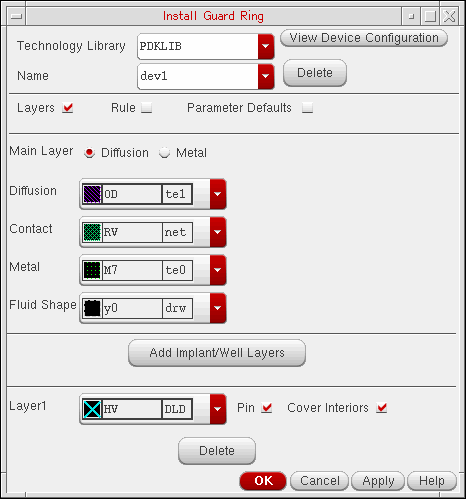

2
Installing Fluid Guard Rings
While using VLS-based FGRs, before cdsGuardRing gets created in the associated technology library.
tech.db file. Also, if there is a data.dm file, it must be writable too. If the technology library is read only, then all the fields on the Install Guard Ring form are disabled and you cannot install any new device.To install an FGR, perform the following steps:
-
Start
virtuoso.
During the initialization of Virtuoso, a set of implementation files (vfo*.ils) required for working with FGRs get loaded automatically in a specific sequence from the following release installation directory:<
install_dir>/tools/dfII/etc/vfoIf you want to load the FGR implementation files from a previous release or from a different location, specify the path by using the fluidGuardRingInstallPathenvironment variable. -
From the CIW, choose Tools – Technology File Manager.
The Technology Tool Box form appears.

-
In the Utilities section, click Guard Ring.
The Install Guard Ring Form appears.

- Select the Technology Library in which you want to install the FGR device.
-
In the Name drop-down list box, you can specify one of the following:
If an existing FGR device is not listed in the Name drop-down list box, it means the device is hidden. Devices can be hidden to avoid chances of making any inadvertent changes to its definition. For procedural details, refer to the Hiding a Device from Install Guard Ring Form section.
In case, you want to change the definition of a hidden FGR device, make it visible on the form by following the steps covered in the Making a Hidden Device Visible on Install and Create Forms section.
If you manually enter the name of a hidden FGR device, you are not allowed to re-install it. Instead, you get a prompt message stating that it is already installed and is hidden. For information about handling such scenario, refer to the answer to question, Can an FGR device hidden from the Install Guard Ring form be re-installed?, in the Virtuoso Fluid Guard Ring Frequently Asked Questions manual. -
The Layers check box is selected by default when the Install Guard Ring form gets displayed.
If you are creating a new FGR, the Diffusion, Contact, and Metal lists are blank. Until you set up these layers, the Rule and Parameter Defaults check boxes, and the View Device Configuration button remain grayed out.It is mandatory to set up the Diffusion, Contact, and Metal layers and optional to set up the Implant/Well layers.- Select either the Diffusion or Metal radio button to define the Main Layer. By default, Diffusion is selected.
- From the Diffusion list, choose the diffusion layer to enclose the Metal layer.
- From the Contact list, choose the layer for vias.
- From the Metal list, choose the metal layer to enclose the Contact layer.
-
From the Fluid Shape list, choose the LPP that Virtuoso will use to represent fluid shape of the FGR instances. The fluid shape is a non-maskable layer. Use it to edit the shape of a FGR instance. By default, y0 drawing is selected.

-
Click Add Implant/Well Layers if the material you select for diffusion layer needs to be enclosed by an implant or well layer.
The Add Implant/Well Layers section appears at the bottom of the form.i) In the Layer1 list, choose an implant or well layer.
ii) Select the Pin check box to make the implant or well layer a pin and assign it the same connectivity as the metal layer.
iii) Select the Cover Interiors check box to cover the interior of the FGR with an implant or well layer.- If the Cover Interiors check box is off, the implant or well layer is drawn only underneath the diffusion, contact, or metal layer portion of the FGR.
- If the Cover Interiors check box is on, the implant or well layer is drawn in the empty area inside the FGR.
You can preview the FGR devices with and without an implant layer in the View Device Configuration window, as illustrated in step 7.
iv) To add more implant or well layers, click the Add Implant/Well Layers button and repeat the above two steps.
If you do not remove an implant or well layer for an FGR, click Delete for that layer in the Add Implant/Well Layers section.
-
Click View Device Configuration to preview the sample FGR with the layers set up in the Layers section.
The View Device Configuration window opens to display a preview of the FGR, as shown below.
The View Device Configuration button is enabled only after you set up the layers in the Layers section. If you add or change the settings in the Layers section, the View Device Configuration window updates dynamically.
The following figures show a preview of different FGRs with and without the implant layer.

-
Select the Rule check box.
- From the Rule Browser Color list, select the color of the arrow to use in the Rule Browser window.
-
Click Show Rules to open the Rule Browser window.
The Rule Browser window shows a graphical representation of a generic FGR device and indicates the physical dimension with a double-headed arrow. -
Place the cursor in the fields in the Rule section to view the corresponding dimension in the Rule Browser window.
The following figures illustrate the contact dimensions, contact spacing, diffusion and metal layer enclosures over contact, and implant and well layer enclosures over diffusion rules of an FGR that comprises an implant and a well layer.
-
To reset the contact Dimensions, Spacing, or enclosure field values to technology file defaults, select the Techfile Default check boxes against the fields. The value reverts to the default value from the technology file.
By default, the values in these fields are populated from the foundry constraint group in the technology file. If the values in the form match the default values from the technology file, the Techfile Default check box is on. You can override the defaults if required. If you do so, the Techfile Default check box turns off. Ensure that the diffusion and metal enclosure values are greater than technology library defaults.
-
To reset the contact Dimensions, Spacing, or enclosure field values to technology file defaults, select the Techfile Default check boxes against the fields. The value reverts to the default value from the technology file.
-
Select the Parameter Defaults check box.

-
Click OK (closes the form) or Apply to create or update an existing FGR device.
The Install Guard Ring dialog box appears to confirm whether you want to save the technology library on disk. If you click Yes, the FGR device is saved to the technology file in virtual memory and written to the technology library on disk. If you dump a technology file after installing the FGR, you will see the FGR definition in the corresponding technology file class.

You can now create FGRs in your design by using the installed device.
Technology Rules Applied During Installation
The following table lists the technology rules that are applicable during the installation of an FGR:
| Form Field | Applicable Technology Rule(s) (Listed in order of precedence) |
|
minLargeViaArrayCutSpacing |
|
|
Minimum of minOppExtension rule (a, b) |
|
You can install an FGR with its implant layer enclosure value less than the default value defined in the technology file.
The default precedence of constraints to get the values for metal layer is the device default value at the end. However, for diffusion layer the device default is at beginning. This implies that the value specified by you for the diffusion layer in
Return to top